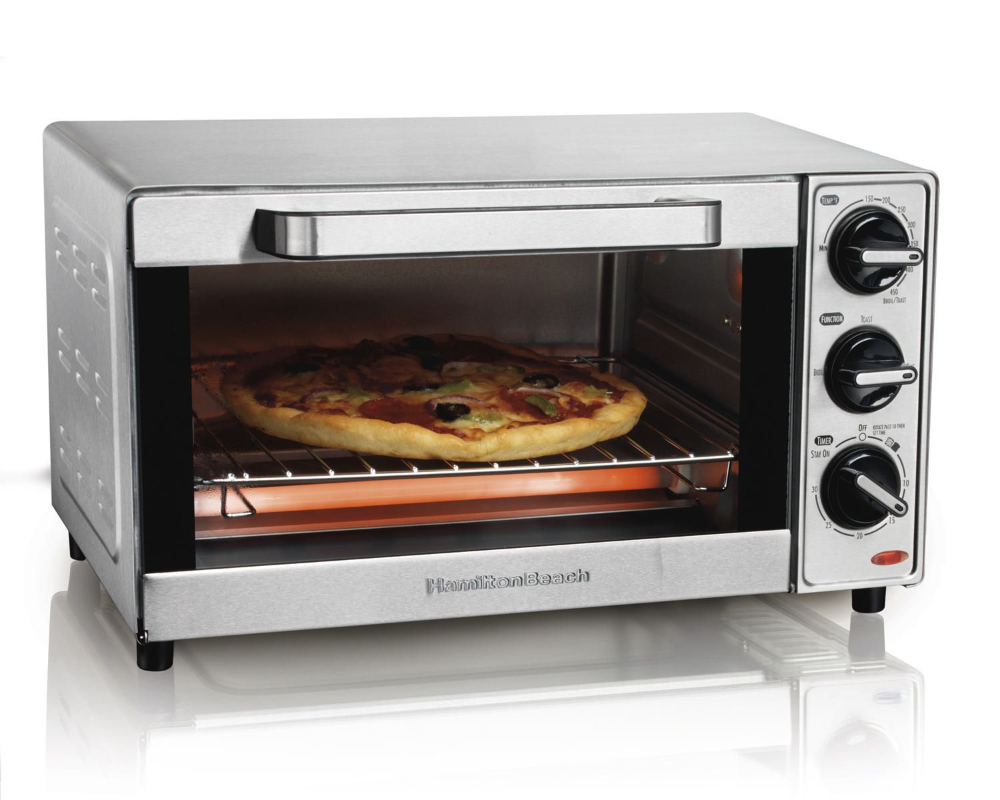
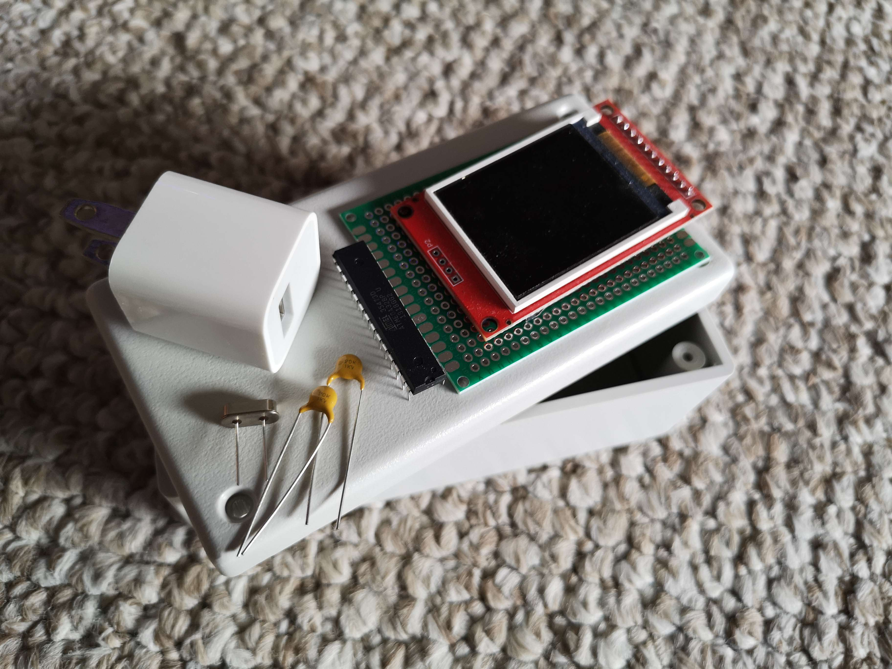
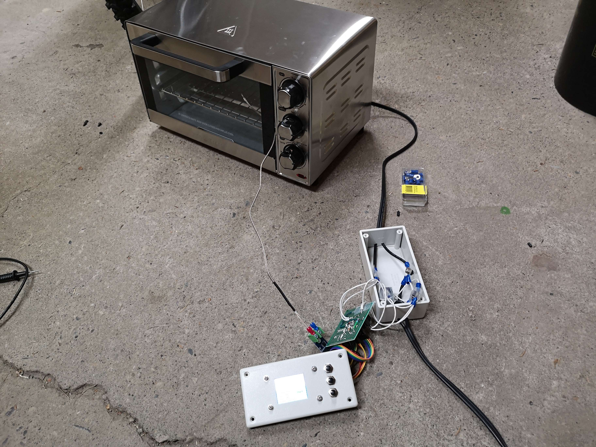
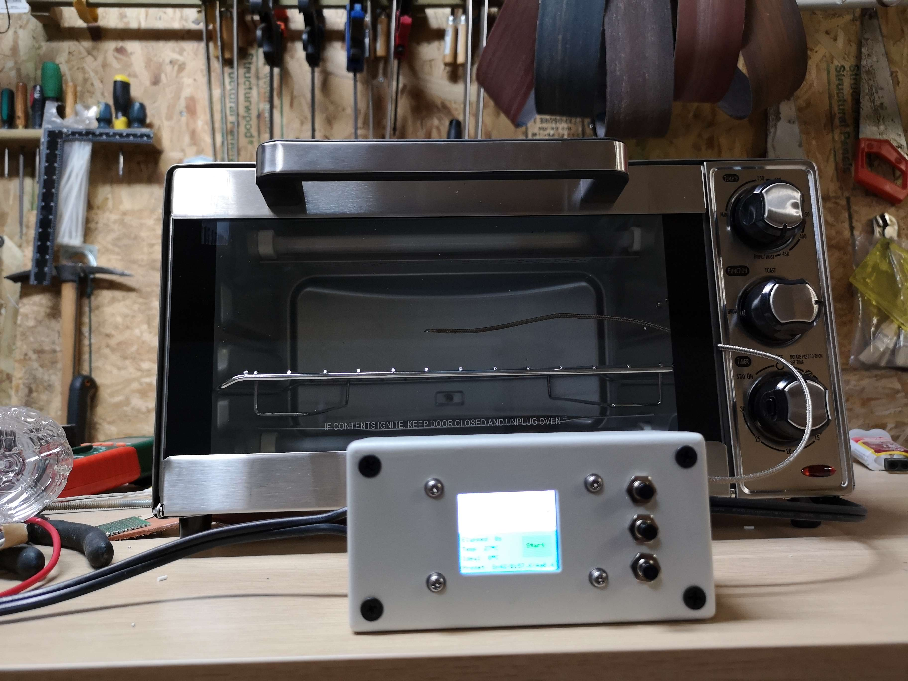

July 16, 2023
While more primitive devices may use through hole parts soldered to a printed circuit board via a pool of molten solder, modern ones are typically made by printing a layer of solder paste (a mixture of powdered solder suspended in flux) onto the PCB, placing the parts on top, and then baking the entire thing in a reflow oven.
For hobbyists, there are a few different ways of assembling SMD boards, including using a hot plate in place of the oven, using a hot air gun, or even hand soldering if doing so is possible. The reflow oven is typically one of the better approaches though.
For low volume production of such boards, a simple toaster oven can be used. These typically are not hot enough to reflow Sn96.5/Ag3/Cu0.5 (or similar) lead free solder, but are sufficient for Bi57.6/Sn42/Ag0.4 and Sn63/Pb37 leaded solder. The bismuth containing solder is typically more expensive, but for small quantities this is not too much of a problem.
The oven
A typical toaster oven is sufficient for this task, and in my case, I found a small toaster oven from Walmart for $28 CAD.
In addition to the oven, when reflowing solder paste, a specific temperature curve should be followed. While this is not completely necessary, it is a good feature to have.

This graph shows the reflow curve of the bismuth containing low temperature solder paste, which should be roughly followed for best results.
The controller
A dedicated controller is not strictly required; you could just stick a thermometer into the oven and turn it on and off like a caveman, but this is obviously not ideal. In my case, I will use a microcontroller and thermocouple to control the oven.
The main parts of this controller will include the following.
- Microcontroller
- Relay
- Display
- Some buttons for user input
- Power supply
For the microcontroller, I used the ATMega328P. While the atmega isn't exactly a modern chip, controlling an oven is not exactly the most demanding task, and I also didn't want to put too much effort into writing the display driver, so with the atmega, I could just use some Arduino libraries. The relay is just a generic one rated for 20A, with a 5V coil. While the 5V coil requires more current to run compared to a 12V one, I chose it so that I did not need two different supply voltages, and/or a 5V regulator. The display I am using is an ST7735 based TFT LCD display. It has a terrible viewing angle, but it works well enough for this.
As for the power supply, pretty much any DC power supply will work, and in my case, I decided to use an old phone charger, which probably seems really strange, but it works and its what I had on hand.
I then shoved all of these into a plastic box of around 5" x 2.5" x 2", into which I sawed a rectangular hole for the display.
The wiring method is slightly sketchy; consisting of ring terminations screwed together, insulated with large amounts of scotch tape. It should be fine for short durations of supervised use though.
Heres an image of the "finished" reflow oven. Currently the thermocouple just goes through the door, but I might decide to drill a small hole or something to run it through. I had some issues with thermal "lag", the temperature according to the thermocouple would often continue to go up even after the oven was switched off, meaning that the temperature accuracy tends to be kind of bad. This is generally fine for most projects though.